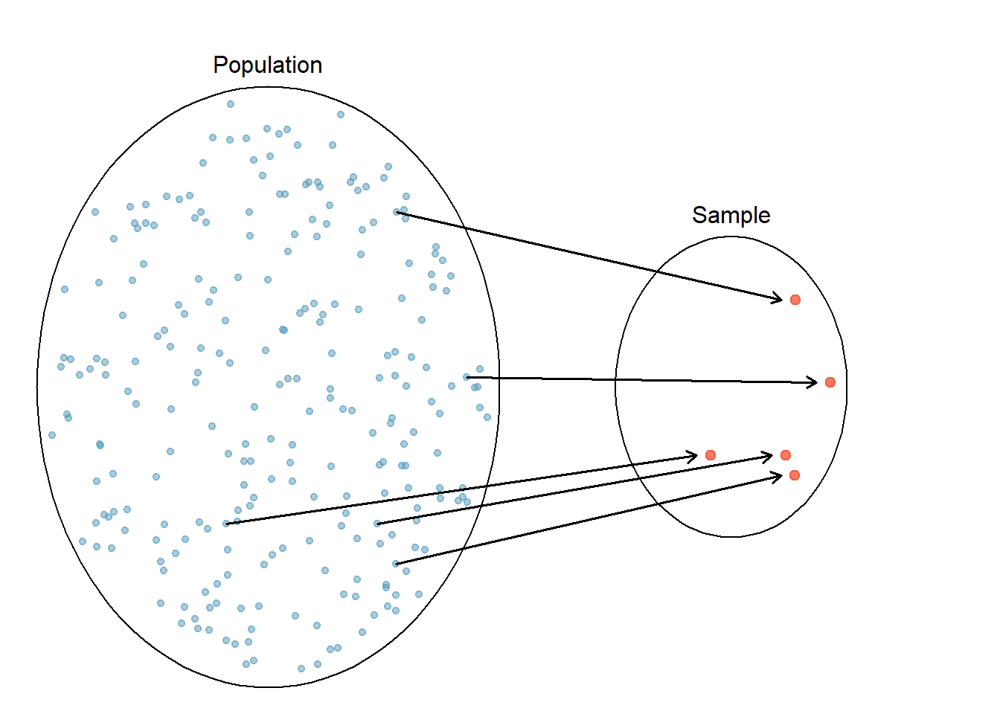
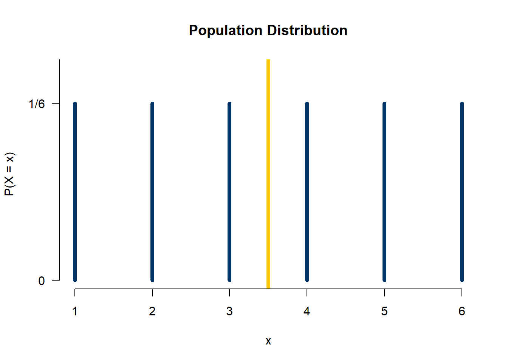
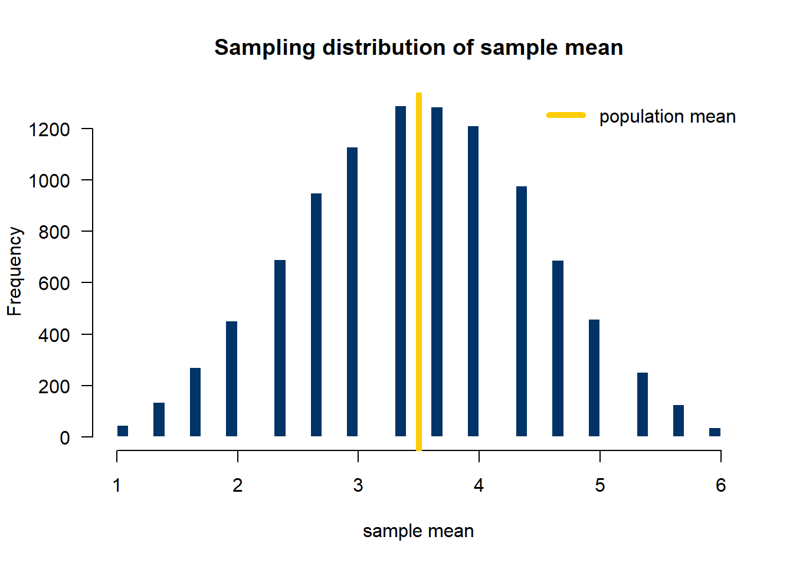
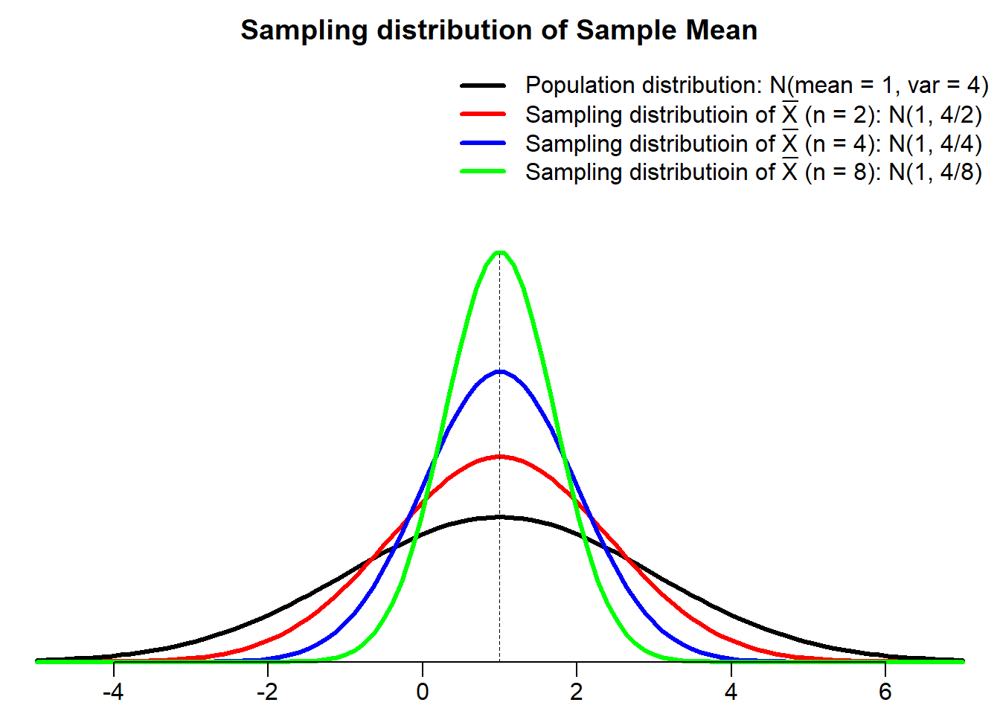

11 Sampling Distribution
This book serves as a main reference book for my MATH 4720 Statistical Methods and MATH 4740 Biostatistical Methods at Marquette University. Some topics can also be discussed in an introductory data science course. You’ll learn basic probability and statistical concepts as well as data analysis techniques such as linear regression using R computing software.
11.1 Parameter
- A parameter is a number that describes a probability distribution.
- Binomial: two parameters \(n\) and \(\pi\)
- Poisson: one parameter \(\mu\)
- Normal: two parameters \(\mu\) and \(\sigma\)
- In statistics, we usually assume our target population follows some distribution, but its parameters are unknown to us.
Human weight follows \(N(\mu, \sigma^2)\)
# of snowstorms in one year follows \(Poisson(\lambda)\)


11.2 Treat Each Data Point as a Random Variable
- \(n\) random variables: \(X_1, X_2, \dots, X_n\).
- Assume \(X_1, X_2, \dots, X_n\) follow the same distribution.

- Assume that \(X_1, X_2, \dots, X_n\) are independent, i.e., the distribution/value of \(X_i\) is not affected by any other \(X_j\).
- With the same distribution, \(X_1, X_2, \dots, X_n\) are independent and identically distributed (i.i.d.), for example, \(X_1, X_2, \dots, X_n \stackrel{iid}{\sim} N(\mu, \sigma^2)\)
- \((X_1, X_2, \dots, X_n)\) is a random sample of size \(n\) from the population.
- \(X_1, X_2, \dots, X_{50}\) are randomly selected SAT scores from the SAT score population that follows \(N(1100, 200^2)\)
11.3 Sampling Distribution
- Any value computed from a sample \((X_1, X_2, \dots, X_n)\) is called a (sample) statistic.
- Sample mean \(\frac{1}{n}\sum_{i=1}^n X_i\) is a statistic.
Sample variance \(\frac{\sum_{i=1}^n \left(X_i - \overline{X}\right)^2}{n-1}\) is a statistic.
Since \(X_1, X_2, \dots, X_n\) are random variables, any transformation or function of \((X_1, X_2, \dots, X_n)\), or statistic, is also a random variable.
The probability distribution of a statistic is called the sampling distribution of that statistic.
- It is the probability distribution of that statistic if we were to repeatedly draw samples of the same size from the population.

- Sample means \((\overline{X})\) are less variable than individual observations \(X_i\).
- Sample means \((\overline{X})\) are more normal than individual observations \(X_i\).
11.4 Example: Sampling Distribution of the Sample Mean
- Roll a fair die 3 times 🎲🎲 🎲 independently to obtain 3 values from the population \(\{1, 2, 3, 4, 5, 6\}\).
- Repeat the process 10,000 times and plot the histogram of the sampling mean.


11.5 Sampling Distribution of Sample Mean
- Suppose \((X_1, \dots, X_n)\) is the random sample from a population distribution with mean \(\mu\) and standard deviation \(\sigma\).
- The mean of the sampling distribution of the sample mean, \(\overline{X} = \frac{\sum_{i=1}^nX_i}{n}\), is \(\mu_{\overline{X}} = \mu\) .
- The standard deviation of the sampling distribution of the sample mean \(\overline{X}\) is \(\sigma_{\overline{X}} = \frac{\sigma}{\sqrt{n}}\) .
- If the population distribution is \(N(\mu, \sigma^2)\) , the sampling distribution of \(\overline{X}\) is exactly \(N\left(\mu, \frac{\sigma^2}{n} \right)\) .

11.6 Standardization of Sample Mean
- For a single random variable \(X \sim N(\mu, \sigma^2)\), \(Z = \frac{X - \mu}{\sigma} \sim N(0, 1)\).
- For the sample mean of \(n\) variables, \(\overline{X} \sim N(\mu_{\overline{X}}, \sigma^2_{\overline{X}}) = N(\mu, \frac{\sigma^2}{n})\), and hence \[Z = \frac{\overline{X} - \mu_{\overline{X}}}{\sigma_{\overline{X}}} = \frac{\overline{X} - \mu}{\sigma/\sqrt{n}} \sim N(0, 1)\]
11.7 Example - Psychomotor retardation
- Psychomotor retardation scores for a group of patients have a normal distribution with a mean of 930 and a standard deviation of 130.
- What is the probability that the mean retardation score of a random sample of 20 patients was between 900 and 960?

- \(X_1, \dots, X_{20} \stackrel{iid}{\sim} N(930, 130^2)\), then \(\overline{X} = \frac{\sum_{i=1}^{20}X_i}{20} \sim N\left(930, \frac{130^2}{20} \right)\).
\[\small \begin{align} P(900 < \overline{X} < 960) &= P\left( \frac{900-930}{130/\sqrt{20}} < \frac{\overline{X}-930}{130/\sqrt{20}} < \frac{960-930}{130/\sqrt{20}}\right)=P(-1.03 < Z < 1.03)\\ &=P(Z < 1.03) - P(Z < -1.03) \end{align}\]
pnorm(1.03) - pnorm(-1.03)[1] 0.69699pnorm(960, mean = 930, sd = 130/sqrt(20)) - pnorm(900, mean = 930, sd = 130/sqrt(20))[1] 0.6979426